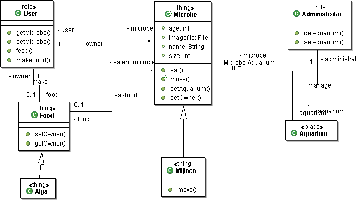

クラス図（class diagram）
modeling
データモデリングでよく用いられるＥＲ（エンティティリレーション）図 に、オブジェクト指向の考え方を追加したものと考えます。ＥＡでは、データ体系（ＤＡ：Data Architecture）において、情報体系を整理するために、このクラス図を用います。実際は、情報体系の分析を行うことで、大まかなクラス図ができ あがり、設計を進めるうちにどんどんクラス図が実装レベルまで詳細になっていきます。
